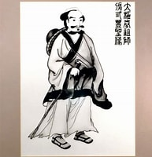

校史
Our School History
The living lineage of Wu Style Tai Chi Chuan — from Shanghai to Ferndale, Michigan.
30 Years in Metro Detroit

Master Wu Tai Chi conducting a workshop at Old Detroit School location
Our school has been serving the Metro Detroit area for over 30 years — working with seniors and hospital patients across Southeast Michigan, teenagers through Cranbrook's Horizons Upward Bound program, and a wide range of everyday people at 24 satellite locations and our main Academy.
We are among a small number of certified instructors in North America authorised to teach directly in the Wu family lineage. Our instructors hold Advanced Level certification from the International Wu Style Tai Chi Chuan Federation.

The Wu Style Lineage
In 1935, the first Wu's Tai Chi Chuan Academy was founded in Shanghai by Grandmaster Wu Chien-ch'uan. The style traces its origins to Yang Luchan and his student Wu Quanyou, a Manchu military officer, whose son Wu Jianquan refined and formalised the art into what we practise today.
"The 108 posture empty hand form routine is the essence. Regular practice strengthens bones and muscles… Preventing disease and prolonging life, Tai Chi Chuan nourishes one's vitality. Two person pushing hands is the application. Softness overcomes hardness, and hardness reinforces softness." — Grandmaster Wu Kung-tsao
Notable Masters & Disciples 著名門徒
Wu Quanyou
Founder of Wu Style. Military officer and disciple of Yang Luchan — laid the foundations of the style's internal martial art.
Wu Jianquan
Co-founder of Wu Style. Taught large numbers and refined the art to clearly distinguish it from Yang style.
Wu Gongyi
Moved family headquarters to Hong Kong in 1948. Senior instructor from 1942 to 1970.
Wu Ta-k'uei
Late grand master credited with promoting Tai Chi in Canada and internationally.
Eddie Wu Guangyu
Current grandmaster. Great-grandson of Wu Jianquan and grandson of Wu Gongyi.